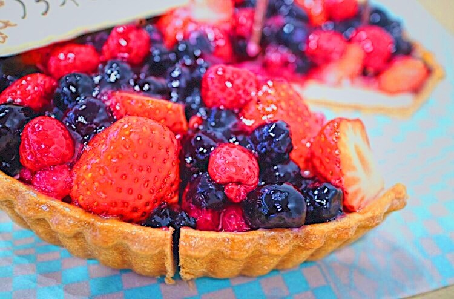
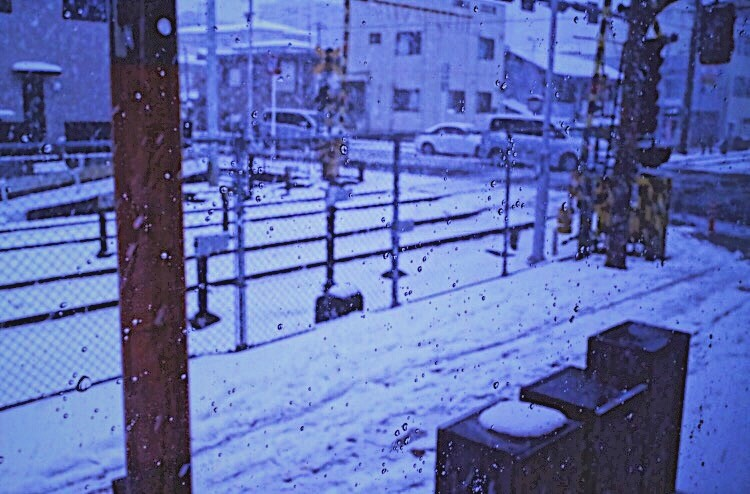

| 2017/01 27 Fri | 斎藤ちはる 3枚の。 |
ちはるーむへようこそ
今日は朝替えたシャー芯が夕方には無くなるくらい
沢山論述したよ〜テスト疲れたよ〜( ˟_˟ )
でも今日が山場だったので...！
ひとまず一山超えられて良かったです◎
まだ終わってないのにも関わらず
開放感からか、自分にご褒美ということで
ケーキを買って帰りました( ¨̮ )
ちゃんと家族の分も買って帰ったよ〜◎
美味しかった...！
好評でした！
写真撮り忘れたので、別のケーキを。
#chihashot

フルーツが宝石みたいにキラキラしてて
本当美味しそう！！
実際も物凄く美味しかった☺︎
#chihashot

よーく見てみると、窓ガラスの水滴が
外の雪景色との境目になっている。
フォーカスを敢えて真ん中に合わせて
ぼや〜っとしてみました。
少し暗くて青っぽい雰囲気が
雪と合っていてお気に入りの写真！
#chihashot
望遠レンズを使って、月を撮ってみました！
自分が撮った写真の中で、初めてクレーターが
(少しだけど)映った記念の写真。
超望遠レンズではないので、他の方の
月の写真よりは劣ってしまいますが
私的にはとても嬉しかった！
今度は満月も撮りたいなぁ
またしても #chihashot 大放出！
全く雰囲気の違った写真を選びました。
カメラに徐々に慣れてきたからか
色んな表情の写真を撮れるようになってきた気がする◎
色んな写真が撮れるようになると
もっと写真撮るのが好きになるね〜
楽しすぎるな〜。
---------------------------------------♡
♬ ChihaMusic
「世界はまだ君を知らない」阿部真央さん
とにかく歌詞がいい。
ずっと聞いていたくなるような
前向きで等身大な歌詞。
元気が出る素敵な曲。
"振り返るとき 今、今日が
きっと 素晴らしく思える
世界は まだ君を知らない"
今を必死に生きよう。
将来思い出した時に、
思い出深く楽しかったと思える日々にしよう。
むに。
眠い。
寝なきゃ。
おやすみ
斎藤ちはる